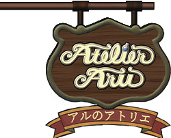
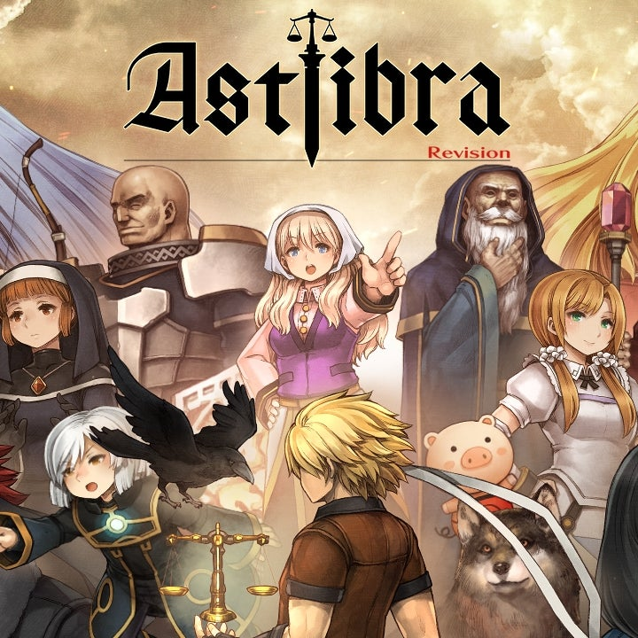
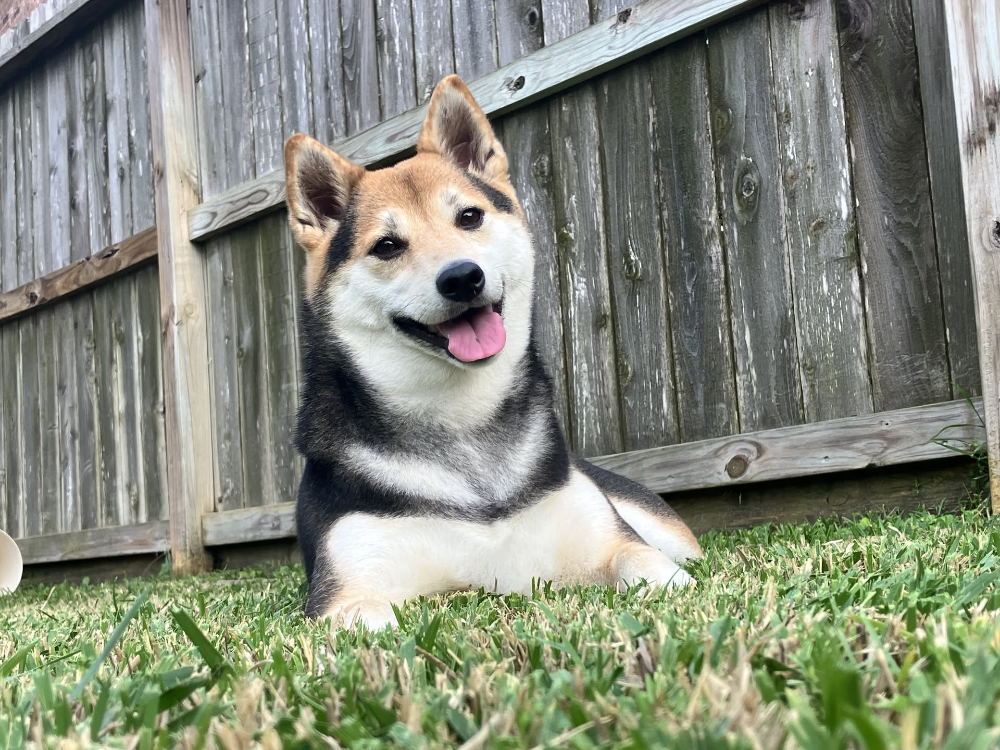
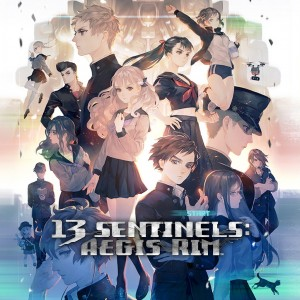
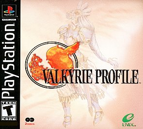

■Billy (Translation, Graphics) Hey, everyone.
Congratulations on finding this Secret Staff Room,
and thanks for checking out this translation of Gekka no Kishi+.
If you've spent any time looking at doujin software (esp. doujin visual novels), you've no doubt come across Kanoso. Among a sea of other parody titles, this one always stood out to me for its art direction, clever use of ソ in place of ン, and a specific, unquantifiable vibe. I could tell this circle really cared about the works they were parodying.
Despite this, I had passed up on buying it since it was relatively pricey for the typical 00s doujin title. I wanna say it has been hovering around 2300 yen or so. Well, being a lowly American Largemouth Bass, the de minimis suspension in the US forced my fin. I imported quite a large amount of doujin soft I had been eyeing for a while.
The day I got to check out Kanoso, I found a "free bonus game" included on the disc called Sayuri no Go. Playing even just 10 minutes cemented the feelings I had regarding Kanoso and itsumonotokoro; these guys were clearly a cut above.
It didn't take too long for me to find out these guys had fleshed out Sayuri no Go into a fully fledged standalone title called Gekka no Kishi...twice? The earlier one uses the character 鬼(Oni) in the title, whereas the later one uses 姫(Hime) in the same spot. The latter one is leaning heavily into being a parody of Tsukihime, so it kind of makes sense, but boy does it make it confusing for an English speaker when both are pronounced "Gekka no Kishi".
Anyway, The Hime version of GnK also included a bonus version called Gekka no Kishi PL+US. After doing a bit more research, it seems I had bought what is essentially the most recent version, and I now had a full collection of all 4 games on my hand.
Okay, cool, so I've got a quadilogy of pretty fun doujin, competitive reversi games. I wasn't sure which one I wanted to really sink my teeth into first, but I eventually landed on the newest game (PL+US).
Man, this hit me like a ton of bricks. Just a few months prior, I had delved deep into the world of "cheating" mahjong games like Suchie Pai and Higurashi Jan. GnK hit just the same since it's essentially that exact same format; it's just reversi instead of jong.
Well, now I had to share how cool I think this is with my friends. I was in luck too, since a good friend of mine was about to host a big LAN party. That would be the perfect place to share it.
One problem though, the game is entirely in Japanese. I mean, you could probably fumble your way around since the rules for reversi are pretty simple, but this game has a lot of competitive depth that the normal game doesn't.
Being the new resident English-speaking GnK fan, I did the only logical thing I could do: I translated GnK+.
That long-winded story may be overselling the game a bit haha
It's quite simple. You can maybe get an hour or two's worth of enjoyment out of GnK+ specifically unless you really get into the competitive aspect of it with some friends.
Still, I think it's a game worth checking out at least once. Ahaha, well, you're reading the words of an old fart like me, so you've probably got time to check out the game. You will, right??
Excuse me for going off topic for a bit, but I feel like I understand Ryukishi07 a bit better now. It's no Comiket, but the upcoming LAN party is looming over me; I can feel the deadline creeping in, nipah~☆
I'm currently sitting at a local anime convention typing this up. Go-live for the 0.9 version of the patch is in less than 24 hours. I'm really feeling the crunch now.
If you've enjoyed this game, please share it with everyone you know♪
Communication with others is what makes this medium and hobby so great. I hope that joy is able to come across in every doujin title you play, translated or otherwise.
"Play hella indie games for me in the meantime!" -Travis Touchdown
|

■Aru（Translation Assistance, Playtesting） Hi guys, this is Aru. Thank you for checking out my friend Billy's work.
I didn't really do anything other than serve as an occasional Type-Moon glossary and some playtesting. This is the second game I've playtested with Billy. Thank you for keeping me on.
I've been learning Japanese as well, taking the classes Billy took a few years ago, so I'm hoping to be able to help with translation work soon.
Say, have you tried to play with friends online? I have a VPN server set up at home, which is probably the only way to do it without rewriting the way the game implements multiplayer. Billy and I tried playing with him VPNing in, but I think I misconfigured some firewall rules so we weren't able to play. I hope you'll have more success than us.
I write about the games I play over at https://hoshikawa-aru.com I'm not a game reviewer or anything, though. I just write for fun. By the time you read this, I might've already migrated to another site, https://atelieraru.net. Occasionally, I write about console modding or retro hardware. It's a bit unfortunate I modded most of my consoles before getting started with writing about them, though...
Please play ASTLIBRA Revision. My favorite part is how you can tell you’re closing in on the ending, so it keeps you really on edge!
 
To close out, please look at my dog.
|
■Keaton (Playtesting) [Backloggd] It's an absolute honour to play a video game and be credited for it, no matter how minor a role I had. A life goal, really.
If you've found yourself in this niche corner of the internet and enjoyed it, I'd strongly suggest continuing to follow Billy's translation releases as they come out. I'm confident that you'll be introduced to more and more unique experiences that may have otherwise gone unnoticed.
It would also be remiss of me to miss this opportunity to recommend any potential readers check out 13 Sentinels: Aegis Rim. A game that, I personally believe, delivers the perfect blend of visual novel storytelling and tactical RPG gameplay in a one-of-a-kind format that may never be perfectly replicated again. It's a truly gripping experience from start to finish, coated in a gorgeous layer of that iconic Vanillaware visual style, and backed by beautiful arrangements by Basiscape. I believe most video game enjoyers really owe it to themselves to at least check out the first few hours, I promise you'll be hooked in the same way I was.
Other than that, if you'd like to see me talk more about games, sometimes I like to pretend I can compose noteworthy reviews on the games I play on my Backloggd.
Enjoy your time with Gekka no Kishi+!

|
■razorthecurse (Playtesting) [YouTube] I playtested? hmm, that's true lol
Play Valkyrie Profile, the best RPG on the PS1!
Get all the endings and don't be lazy!!
Do a playthrough with different character types (all archers/warriors/wizards) to spice it up!!!
Experience Higurashi with your friends if you haven't already, it's a lot of fun.
If you've already played Higurashi, get your friends to play it and talk to them about their experience with it, chapter by chapter.
If you and your friends have already played Higurashi, then play Umineko, and if you've already played umineko, then play the next When They Cry series. And if you've already done that, then replay Valkyrie Profile, you haven't gotten all the endings yet, right?
You did? Not with just Lenneth as your only party member, so get back to it!!

|
■caldenza (Special Thanks) [caldenza.gg] "moon water. bad water. no good water."
watch the movie lurker it owns
|
|